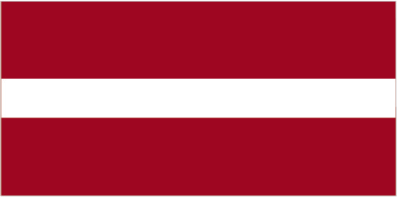

Europe :: LATVIA
Introduction :: LATVIA
-
Several eastern Baltic tribes merged in medieval times to form the ethnic core of the Latvian people (ca. 8th-12th centuries A.D.). The region subsequently came under the control of Germans, Poles, Swedes, and finally, Russians. A Latvian republic emerged following World War I, but it was annexed by the USSR in 1940 - an action never recognized by the US and many other countries. Latvia reestablished its independence in 1991 following the breakup of the Soviet Union. Although the last Russian troops left in 1994, the status of the Russian minority (some 26% of the population) remains of concern to Moscow. Latvia acceded to both NATO and the EU in the spring of 2004; it joined the euro zone in 2014 and the OECD in 2016. A dual citizenship law was adopted in 2013, easing naturalization for non-citizen children.
Geography :: LATVIA
-
Eastern Europe, bordering the Baltic Sea, between Estonia and Lithuania57 00 N, 25 00 EEuropetotal: 64,589 sq kmland: 62,249 sq kmwater: 2,340 sq kmcountry comparison to the world: 125slightly larger than West Virginiatotal: 1,370 kmborder countries (4): Belarus 161 km, Estonia 333 km, Lithuania 544 km, Russia 332 km498 kmterritorial sea: 12 nmexclusive economic zone: limits as agreed to by Estonia, Finland, Latvia, Sweden, and Russiacontinental shelf: 200 m depth or to the depth of exploitationmaritime; wet, moderate winterslow plainmean elevation: 87 melevation extremes: lowest point: Baltic Sea 0 mhighest point: Gaizina Kalns 312 mpeat, limestone, dolomite, amber, hydropower, timber, arable landagricultural land: 29.2%arable land 18.6%; permanent crops 0.1%; permanent pasture 10.5%forest: 54.1%other: 16.7% (2011 est.)12 sq kmnote: land in Latvia is often too wet and in need of drainage not irrigation; approximately 16,000 sq km or 85% of agricultural land has been improved by drainage (2012)largest concentration of people is found in and around the port and capital city of Riga; small agglomerations are scattered throughout the countrylarge percentage of agricultural fields can become waterlogged and require drainageLatvia's environment has benefited from a shift to service industries after the country regained independence; improvements have occurred in drinking water quality, sewage treatment, household and hazardous waste management, as well as reduction of air pollutionparty to: Air Pollution, Air Pollution-Persistent Organic Pollutants, Biodiversity, Climate Change, Climate Change-Kyoto Protocol, Desertification, Endangered Species, Hazardous Wastes, Law of the Sea, Ozone Layer Protection, Ship Pollution, Wetlandssigned, but not ratified: none of the selected agreementsmost of the country is composed of fertile low-lying plains with some hills in the east
People and Society :: LATVIA
-
1,944,643 (July 2017 est.)country comparison to the world: 149noun: Latvian(s)adjective: LatvianLatvian 61.8%, Russian 25.6%, Belarusian 3.4%, Ukrainian 2.3%, Polish 2.1%, Lithuanian 1.2%, other 3.6% (2016 est.)Latvian (official) 56.3%, Russian 33.8%, other 0.6% (includes Polish, Ukrainian, and Belarusian), unspecified 9.4%note: data represent language usually spoken at home (2011 est.)Lutheran 19.6%, Orthodox 15.3%, other Christian 1%, other 0.4%, unspecified 63.7% (2006)0-14 years: 15.15% (male 151,195/female 143,388)15-24 years: 9.45% (male 94,779/female 88,952)25-54 years: 41.75% (male 403,699/female 408,277)55-64 years: 14.1% (male 121,993/female 152,260)65 years and over: 19.55% (male 124,570/female 255,530) (2017 est.)total dependency ratio: 52.5youth dependency ratio: 23.1elderly dependency ratio: 29.4potential support ratio: 3.4 (2015 est.)total: 43.6 yearsmale: 39.7 yearsfemale: 46.9 years (2017 est.)country comparison to the world: 17-1.08% (2017 est.)country comparison to the world: 2289.7 births/1,000 population (2017 est.)country comparison to the world: 19814.5 deaths/1,000 population (2017 est.)country comparison to the world: 4-6.1 migrant(s)/1,000 population (2017 est.)country comparison to the world: 199largest concentration of people is found in and around the port and capital city of Riga; small agglomerations are scattered throughout the countryurban population: 67.4% of total population (2017)rate of urbanization: -0.56% annual rate of change (2015-20 est.)RIGA (capital) 621,000 (2015)at birth: 1.05 male(s)/female0-14 years: 1.05 male(s)/female15-24 years: 1.07 male(s)/female25-54 years: 0.98 male(s)/female55-64 years: 0.79 male(s)/female65 years and over: 0.48 male(s)/femaletotal population: 0.85 male(s)/female (2016 est.)27.2 years (2014 est.)18 deaths/100,000 live births (2015 est.)country comparison to the world: 130total: 5.2 deaths/1,000 live birthsmale: 5.6 deaths/1,000 live birthsfemale: 4.8 deaths/1,000 live births (2017 est.)country comparison to the world: 175total population: 74.7 yearsmale: 70.1 yearsfemale: 79.5 years (2017 est.)country comparison to the world: 1211.51 children born/woman (2017 est.)country comparison to the world: 1965.9% of GDP (2014)country comparison to the world: 1063.22 physicians/1,000 population (2014)5.9 beds/1,000 population (2011)improved:urban: 99.8% of populationrural: 98.3% of populationtotal: 99.3% of populationunimproved:urban: 0.2% of populationrural: 1.7% of populationtotal: 0.7% of population (2015 est.)improved:urban: 90.8% of populationrural: 81.5% of populationtotal: 87.8% of populationunimproved:urban: 9.2% of populationrural: 18.5% of populationtotal: 12.2% of population (2015 est.)0.7% (2016 est.)country comparison to the world: 526,600 (2016 est.)country comparison to the world: 104<500 (2016 est.)degree of risk: intermediatevectorborne diseases: tickborne encephalitis (2016)23.6% (2016)country comparison to the world: 654.9% of GDP (2013)country comparison to the world: 77definition: age 15 and over can read and writetotal population: 99.9%male: 99.9%female: 99.9% (2015 est.)total: 16 yearsmale: 16 yearsfemale: 17 years (2014)total: 16.3%male: 18%female: 14.1% (2015 est.)country comparison to the world: 28
Government :: LATVIA
-
conventional long form: Republic of Latviaconventional short form: Latvialocal long form: Latvijas Republikalocal short form: Latvijaformer: Latvian Soviet Socialist Republicetymology: the name "Latvia" originates from the ancient Latgalians, one of four eastern Baltic tribes that formed the ethnic core of the Latvian people (ca. 8th-12th centuries A.D.)parliamentary republicname: Rigageographic coordinates: 56 57 N, 24 06 Etime difference: UTC+2 (7 hours ahead of Washington, DC, during Standard Time)daylight saving time: +1hr, begins last Sunday in March; ends last Sunday in October110 municipalities (novadi, singular - novads) and 9 citiesmunicipalities: Adazu Novads, Aglonas Novads, Aizkraukles Novads, Aizputes Novads, Aknistes Novads, Alojas Novads, Alsungas Novads, Aluksnes Novads, Amatas Novads, Apes Novads, Auces Novads, Babites Novads, Baldones Novads, Baltinavas Novads, Balvu Novads, Bauskas Novads, Beverinas Novads, Brocenu Novads, Burtnieku Novads, Carnikavas Novads, Cesu Novads, Cesvaines Novads, Ciblas Novads, Dagdas Novads, Daugavpils Novads, Dobeles Novads, Dundagas Novads, Durbes Novads, Engures Novads, Erglu Novads, Garkalnes Novads, Grobinas Novads, Gulbenes Novads, Iecavas Novads, Ikskiles Novads, Ilukstes Novads, Incukalna Novads, Jaunjelgavas Novads, Jaunpiebalgas Novads, Jaunpils Novads, Jekabpils Novads, Jelgavas Novads, Kandavas Novads, Karsavas Novads, Keguma Novads, Kekavas Novads, Kocenu Novads, Kokneses Novads, Kraslavas Novads, Krimuldas Novads, Krustpils Novads, Kuldigas Novads, Lielvardes Novads, Ligatnes Novads, Limbazu Novads, Livanu Novads, Lubanas Novads, Ludzas Novads, Madonas Novads, Malpils Novads, Marupes Novads, Mazsalacas Novads, Mersraga Novads, Nauksenu Novads, Neretas Novads, Nicas Novads, Ogres Novads, Olaines Novads, Ozolnieku Novads, Pargaujas Novads, Pavilostas Novads, Plavinu Novads, Preilu Novads, Priekules Novads, Priekulu Novads, Raunas Novads, Rezeknes Novads, Riebinu Novads, Rojas Novads, Ropazu Novads, Rucavas Novads, Rugaju Novads, Rujienas Novads, Rundales Novads, Salacgrivas Novads, Salas Novads, Salaspils Novads, Saldus Novads, Saulkrastu Novads, Sejas Novads, Siguldas Novads, Skriveru Novads, Skrundas Novads, Smiltenes Novads, Stopinu Novads, Strencu Novads, Talsu Novads, Tervetes Novads, Tukuma Novads, Vainodes Novads, Valkas Novads, Varaklanu Novads, Varkavas Novads, Vecpiebalgas Novads, Vecumnieku Novads, Ventspils Novads, Viesites Novads, Vilakas Novads, Vilanu Novads, Zilupes Novadscities: Daugavpils, Jekabpils, Jelgava, Jurmala, Liepaja, Rezekne, Riga, Valmiera, Ventspils4 May 1990 (declared independence from the Soviet Union); 6 September 1991 (recognized by the Soviet Union)Independence Day (Republic of Latvia Proclamation Day), 18 November (1918); note - 18 November 1918 was the date Latvia established its statehood and its concomitant independence from Soviet Russia; 4 May 1990 was the date it declared the restoration of Latvian statehood and its concomitant independence from the Soviet Unionhistory: several previous (pre-1991 independence); note - following the restoration of independence in 1991, parts of the 1922 constitution were reintroduced 4 May 1990 and fully reintroduced 6 July 1993amendments: proposed by two-thirds of Parliament members or by petition of one-tenth of qualified voters submitted through the president; passage requires at least two-thirds majority vote of Parliament in each of three readings; amendment of constitutional articles including national sovereignty, language, the parliamentary electoral system, and constitutional amendment procedures requires passage in a referendum by majority vote of at least one-half of the electorate; amended several times, last in 2014 (2016)civil law system with traces of socialist legal traditions and practiceshas not submitted an ICJ jurisdiction declaration; accepts ICCt jurisdictioncitizenship by birth: nocitizenship by descent only: at least one parent must be a citizen of Latviadual citizenship recognized: noresidency requirement for naturalization: 5 years18 years of age; universalchief of state: President Raimonds VEJONIS (since 8 July 2015)head of government: Prime Minister Maris KUCINSKIS (since 11 February 2016); Deputy Prime Minister Arvils ASERADENS (since 11 February 2016)cabinet: Cabinet of Ministers nominated by the prime minister, appointed by Parliamentelections/appointments: president indirectly elected by Parliament for a 4-year term (eligible for a second term); election last held on 3 June 2015 (next to be held in 2019); prime minister appointed by the president, confirmed by Parliamentelection results: Raimonds VEJONIS elected president; Parliament vote - Raimonds VEJONIS 55 of 100description: unicameral Parliament or Saeima (100 seats; members directly elected in multi-seat constituencies by proportional representation vote; members serve 4-year terms)elections: last held on 4 October 2014 (next to be held in October 2018)election results: percent of vote by party - SC 23%, Unity 21.9%, ZZS 19.5%, NA 16.6%, NSL 6.9%, LRA 6.7%, other 5.4%; seats by party - SC 24, Unity 23, ZZS 21, NA 17, LRA 8, NSL 7highest court(s): Supreme Court (consists of the Senate with 27 judges and Supreme Court of Chambers with 22 judges); Constitutional Court (consists of 7 judges)judge selection and term of office: Supreme Court judges nominated by chief justice and confirmed by the Saeima; judges serve until age 70, but term can be extended 2 years; Constitutional Court judges - 3 nominated by Saeima members, 2 by Cabinet ministers, and 2 by plenum of Supreme Court; all judges confirmed by Saeima majority vote; Constitutional Court president and vice president serve in their positions for 3 years; all judges serve 10-year terms; mandatory retirement at age 70subordinate courts: district (city) and regional courtsAlliance of Regions or LRA [Martins BONDARS]For Latvia from the Heart or NSL [Inguna SUDRABA]Social Democratic Party "Harmony" or SC [Nils USAKOVS]National Alliance "All For Latvia!"-"For Fatherland and Freedom/LNNK" or NA [Gaidis BERZINS, Raivis DZINTARS]Union of Greens and Farmers or ZZS [Augusts BRIGMANIS]Unity [Andris PIEBALGS]Latvian Employers' Confederation or LDDK [Vitalijs GAVRILOVS]Farmers' Parliament or ZSA [Juris LAZDINS]Free Trade Union Confederation of Latvia or LBAS [Egils BALDZENS]Australia Group, BA, BIS, CBSS, CD, CE, EAPC, EBRD, ECB, EIB, EMU, ESA (cooperating state), EU, FAO, IAEA, IBRD, ICAO, ICC (NGOs), ICCt, ICRM, IDA, IFC, IFRCS, IHO, ILO, IMF, IMO, IMSO, Interpol, IOC, IOM, IPU, ISO (correspondent), ITU, ITUC (NGOs), MIGA, NATO, NIB, NSG, OAS (observer), OIF (observer), OPCW, OSCE, PCA, Schengen Convention, UN, UNCTAD, UNESCO, UNHCR, UNWTO, UPU, WCO, WHO, WIPO, WMO, WTOchief of mission: Ambassador Andris TEIKMANIS (since 16 September 2016)chancery: 2306 Massachusetts Ave. NW, Washington, DC 20008telephone: [1] (202) 328-2840FAX: [1] (202) 328-2860chief of mission: Ambassador Nancy Bikoff PETTIT (since 8 September 2015)embassy: 1 Samnera Velsa St, Riga LV-1510mailing address: Embassy of the United States of America, 1 Samnera Velsa St, Riga, LV-1510, Latviatelephone: [371] 6710-7000FAX: [371] 6710-7050three horizontal bands of maroon (top), white (half-width), and maroon; the flag is one of the older banners in the world; a medieval chronicle mentions a red standard with a white stripe being used by Latvian tribes in about 1280white wagtail (bird); national colors: maroon, whitename: "Dievs, sveti Latviju!" (God Bless Latvia)lyrics/music: Karlis BAUMANISnote: adopted 1920, restored 1990; first performed in 1873 while Latvia was a part of Russia; banned during the Soviet occupation from 1940 to 1990
Economy :: LATVIA
-
Latvia is a small, open economy with exports contributing more than half of GDP. Due to its geographical location, transit services are highly-developed, along with timber and wood-processing, agriculture and food products, and manufacturing of machinery and electronics industries. Corruption continues to be an impediment to attracting foreign direct investment and Latvia's low birth rate and decreasing population are major challenges to its long-term economic vitality.Latvia's economy experienced GDP growth of more than 10% per year during 2006-07, but entered a severe recession in 2008 as a result of an unsustainable current account deficit and large debt exposure amid the slowing world economy. Triggered by the collapse of the second largest bank, GDP plunged 18% in 2009. The economy has yet to return to pre-crisis levels in real terms despite strong growth, especially in the export sector. Continued gains in competitiveness and investment will be key to maintaining economic growth, especially in light of unfavorable demographic trends.The IMF, EU, and other international donors provided substantial financial assistance to Latvia as part of an agreement to defend the currency's peg to the euro in exchange for the government's commitment to stringent austerity measures. The IMF/EU program successfully concluded in December 2011, although, the austerity measures have imposed large social costs. The majority of companies, banks, and real estate have been privatized, although the state still holds sizable stakes in a few large enterprises, including 80% ownership of the Latvian national airline. Latvia officially joined the World Trade Organization in February 1999 and the EU in May 2004. Latvia also joined the euro zone in 2014 and the OECD in 2016.$50.61 billion (2016 est.)$49.01 billion (2015 est.)$47.21 billion (2014 est.)note: data are in 2016 dollarscountry comparison to the world: 109$27.69 billion (2016 est.)2% (2016 est.)2.7% (2015 est.)2.1% (2014 est.)country comparison to the world: 135$25,700 (2016 est.)$25,000 (2015 est.)$24,200 (2014 est.)note: data are in 2016 dollarscountry comparison to the world: 7421.4% of GDP (2016 est.)21.3% of GDP (2015 est.)21.2% of GDP (2014 est.)country comparison to the world: 80household consumption: 62%government consumption: 17.5%investment in fixed capital: 18.3%investment in inventories: 1.6%exports of goods and services: 58%imports of goods and services: -57.4% (2016 est.)agriculture: 3.2%industry: 21.9%services: 74.9% (2016 est.)grain, rapeseed, potatoes, vegetables; pork, poultry, milk, eggs; fishprocessed foods, processed wood products, textiles, processed metals, pharmaceuticals, railroad cars, synthetic fibers, electronics-1% (2016 est.)country comparison to the world: 167988,600 (2016 est.)country comparison to the world: 144agriculture: 7.7%industry: 24.1%services: 68.1% (2016 est.)9.6% (2016 est.)9.9% (2015 est.)country comparison to the world: 12825.5% (2015)lowest 10%: 2.2%highest 10%: 26.3% (2015)34.5 (2015)35.4 (2014)country comparison to the world: 97revenues: $10.07 billionexpenditures: $10.06 billion (2016 est.)36.4% of GDP (2016 est.)country comparison to the world: 520% of GDP (2016 est.)country comparison to the world: 4240.1% of GDP (2016 est.)36.5% of GDP (2015 est.)note: data cover general government debt, and includes debt instruments issued (or owned) by government entities, including sub-sectors of central government, state government, local government, and social security fundscountry comparison to the world: 134calendar year0.1% (2016 est.)0.2% (2015 est.)country comparison to the world: 560% (31 December 2016 est.)0.05% (31 December 2015 est.)country comparison to the world: 1554.5% (31 December 2016 est.)4.5% (31 December 2015 est.)country comparison to the world: 151$10.71 billion (31 December 2016 est.)$10.3 billion (31 December 2015 est.)country comparison to the world: 82$12.97 billion (31 December 2016 est.)$12.53 billion (31 December 2015 est.)country comparison to the world: 100$15.11 billion (31 December 2016 est.)$15.39 billion (31 December 2015 est.)country comparison to the world: 94$6.76 billion (31 December 2016 est.)$6.799 billion (31 December 2015 est.)$7.127 billion (31 December 2014 est.)country comparison to the world: 79$409 million (2016 est.)$-212.4 million (2015 est.)country comparison to the world: 47$11.35 billion (2016 est.)$11.45 billion (2015 est.)country comparison to the world: 82foodstuffs, wood and wood products, metals, machinery and equipment, textilesLithuania 17.3%, Estonia 11.5%, Russia 11.4%, Germany 6.8%, Sweden 5.7%, UK 5.3%, Poland 5%, Denmark 4.4% (2016)$13.28 billion (2016 est.)$13.71 billion (2015 est.)country comparison to the world: 88machinery and equipment, consumer goods, chemicals, fuels, vehiclesLithuania 16.9%, Germany 12.3%, Poland 10.4%, Estonia 7.9%, Russia 7.4%, Finland 4.3%, Netherlands 4.3% (2016)$3.514 billion (31 December 2016 est.)$3.446 billion (31 December 2015 est.)country comparison to the world: 101$40.02 billion (31 March 2016 est.)$38.19 billion (31 March 2015 est.)country comparison to the world: 70$15.36 billion (31 December 2016 est.)$15.93 billion (31 December 2015 est.)country comparison to the world: 86$2.485 billion (31 December 2016 est.)$2.482 billion (31 December 2015 est.)country comparison to the world: 78lati (LVL) per US dollar -0.9037 (2016 est.)0.9037 (2015 est.)0.9012 (2014 est.)0.7525 (2013 est.)0.55 (2012 est.)
Energy :: LATVIA
-
electrification - total population: 100% (2016)5.342 billion kWh (2015 est.)country comparison to the world: 1196.712 billion kWh (2015 est.)country comparison to the world: 1113.795 billion kWh (2016 est.)country comparison to the world: 384.828 billion kWh (2016 est.)country comparison to the world: 412.935 million kW (2015 est.)country comparison to the world: 9839.1% of total installed capacity (2015 est.)country comparison to the world: 1690% of total installed capacity (2015 est.)country comparison to the world: 12754.1% of total installed capacity (2015 est.)country comparison to the world: 356.7% of total installed capacity (2015 est.)country comparison to the world: 840 bbl/day (2016 est.)country comparison to the world: 1590 bbl/day (2016 est.)country comparison to the world: 1520 bbl/day (2016 est.)country comparison to the world: 1490 bbl (1 January 2017 es)country comparison to the world: 1560 bbl/day (2016 est.)country comparison to the world: 16337,680 bbl/day (2016 est.)country comparison to the world: 11722,640 bbl/day (2016 est.)country comparison to the world: 6954,060 bbl/day (2016 est.)country comparison to the world: 790 cu m (2014 est.)country comparison to the world: 1582.2 billion cu m (2015 est.)country comparison to the world: 850 cu m (2014 est.)country comparison to the world: 1361.306 billion cu m (2015 est.)country comparison to the world: 560 cu m (2014 est.)country comparison to the world: 1607.6 million Mt (2013 est.)country comparison to the world: 113
Communications :: LATVIA
-
total subscriptions: 367,195subscriptions per 100 inhabitants: 19 (July 2016 est.)country comparison to the world: 106total: 2,650,273subscriptions per 100 inhabitants: 135 (July 2016 est.)country comparison to the world: 145general assessment: recent efforts focused on bringing competition to the telecommunications sector; the number of fixed lines is decreasing as mobile-cellular telephone service expandsdomestic: number of telecommunications operators has grown rapidly since the fixed-line market opened to competition in 2003; combined fixed-line and mobile-cellular subscribership roughly 150 per 100 personsinternational: country code - 371; the Latvian network is now connected via fiber-optic cable to Estonia, Finland, and Sweden (2016)several national and regional commercial TV stations are foreign-owned, 2 national TV stations are publicly owned; system supplemented by privately owned regional and local TV stations; cable and satellite multi-channel TV services with domestic and foreign broadcasts available; publicly owned broadcaster operates 4 radio networks with dozens of stations throughout the country; dozens of private broadcasters also operate radio stations (2007).lvtotal: 1,570,374percent of population: 79.9% (July 2016 est.)country comparison to the world: 110
Transportation :: LATVIA
-
number of registered air carriers: 3inventory of registered aircraft operated by air carriers: 47annual passenger traffic on registered air carriers: 2,527,368annual freight traffic on registered air carriers: 2,277,996 mt-km (2015)YL (2016)42 (2013)country comparison to the world: 101total: 18over 3,047 m: 12,438 to 3,047 m: 31,524 to 2,437 m: 4914 to 1,523 m: 3under 914 m: 7 (2017)total: 24under 914 m: 24 (2013)1 (2013)gas 928 km; refined products 415 km (2013)total: 2,239 kmbroad gauge: 2,206 km 1.520-m gaugenarrow gauge: 33 km 0.750-m gauge (2008)country comparison to the world: 68total: 72,440 kmpaved: 14,707 kmunpaved: 57,733 km (2013)country comparison to the world: 65300 km (navigable year-round) (2010)country comparison to the world: 92total: 11by type: cargo 3, chemical tanker 1, passenger/cargo 4, petroleum tanker 2, roll on/roll off 1foreign-owned: 3 (Estonia 3)registered in other countries: 79 (Antigua and Barbuda 16, Belize 9, Comoros 2, Dominica 2, Georgia 1, Liberia 5, Malta 8, Marshall Islands 19, Russia 2, Saint Vincent and the Grenadines 15) (2010)country comparison to the world: 113major seaport(s): Riga, Ventspils
Military and Security :: LATVIA
-
1.47% of GDP (2016)1.05% of GDP (2015)0.94% of GDP (2014)0.94% of GDP (2013)0.91% of GDP (2012)country comparison to the world: 105National Armed Forces (Nacionalie Brunotie Speki): Land Forces (Latvijas Sauszemes Speki), Navy (Latvijas Juras Speki, includes Coast Guard (Latvijas Kara Flote)), Latvian Air Force (Latvijas Gaisa Speki), Latvian Home Guard (Latvijas Zemessardze) (2017)18 years of age for voluntary male and female military service; no conscription; under current law, every citizen is entitled to serve in the armed forces for life (2016)
Transnational Issues :: LATVIA
-
Russia demands better Latvian treatment of ethnic Russians in Latvia; boundary demarcated with Latvia and Lithuania; the Latvian parliament has not ratified its 1998 maritime boundary treaty with Lithuania, primarily due to concerns over oil exploration rights; as a member state that forms part of the EU's external border, Latvia has implemented the strict Schengen border rules with Russiastateless persons: 242,736 (2016); note - individuals who were Latvian citizens prior to the 1940 Soviet occupation and their descendants were recognized as Latvian citizens when the country's independence was restored in 1991; citizens of the former Soviet Union residing in Latvia who have neither Latvian nor other citizenship are considered non-citizens (officially there is no statelessness in Latvia) and are entitled to non-citizen passports; children born after Latvian independence to stateless parents are entitled to Latvian citizenship upon their parents' request; non-citizens cannot vote or hold certain government jobs and are exempt from military service but can travel visa-free in the EU under the Schengen accord like Latvian citizens; non-citizens can obtain naturalization if they have been permanent residents of Latvia for at least five years, pass tests in Latvian language and history, and know the words of the Latvian national anthemtransshipment and destination point for cocaine, synthetic drugs, opiates, and cannabis from Southwest Asia, Western Europe, Latin America, and neighboring Baltic countries; despite improved legislation, vulnerable to money laundering due to nascent enforcement capabilities and comparatively weak regulation of offshore companies and the gaming industry; CIS organized crime (including counterfeiting, corruption, extortion, stolen cars, and prostitution) accounts for most laundered proceeds